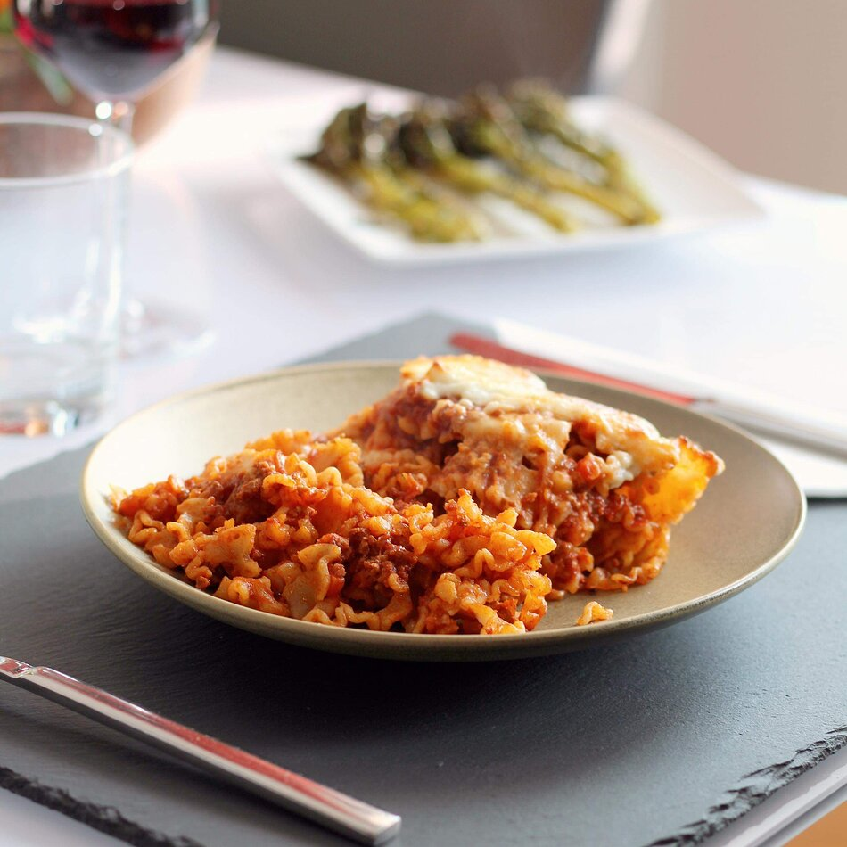

Grandmother's Famous Skillet Lasagna
Granny Ann was always known for her secret lasagna recipe. After keeping it hidden away for years, she's finally let us in on the secret of how she makes her lasagna so delicious.
Ingredients
- Lasagna noodles
- Cheese
- Pasta sauce
Steps
- Place the noodles into the baking pan.
- Cover the noodles in pasta sauce and cheese.
- Place into the oven at 450 degrees for 5 minutes.
- Finally, enjoy!
Skillet Lasagna Recipe